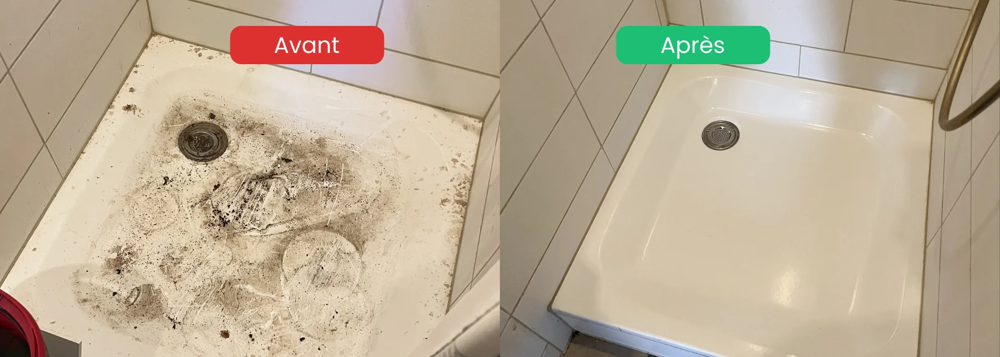

- Cause n°1 : une souffrance psychique sous-jacente, jamais un choix
- Données suisses : 18% de la population exprime un mal-être psychique, 29% chez les jeunes femmes (Obsan, 2022)
- Conséquences physiques : allergies, infections, troubles respiratoires, risque de chute
- Conséquences mentales : honte, isolement, aggravation des troubles
- Première étape : demander de l'aide médicale et professionnelle, sans culpabilité
Pourquoi un logement devient insalubre
Aucun logement n'arrive à cet état du jour au lendemain. C'est presque toujours un processus lent, lié à une vulnérabilité personnelle qui empêche la gestion quotidienne du domicile.
Les situations les plus fréquentes rencontrées sur le terrain :
- Dépression sévère — la perte d'énergie et de motivation rend chaque tâche insurmontable
- Deuil — après la perte d'un proche, l'environnement matériel reste figé dans le temps
- Burn-out — l'épuisement total mène à l'abandon de l'entretien
- Isolement social — sans regard extérieur, les repères se perdent
- Vieillissement et perte d'autonomie — gestes du quotidien devenus difficiles
- Troubles psychiques spécifiques — dont le syndrome de Diogène et la syllogomanie
- Sortie d'hôpital ou d'EMS — retour dans un logement laissé à l'abandon
Reconnaître les situations selon leur origine
Chaque situation a ses signaux observables et nécessite une approche adaptée. Ce tableau aide à mieux comprendre l'origine d'une dégradation sans poser de diagnostic — seul un professionnel de santé peut le faire.
| Situation | Signaux observables | Première étape recommandée |
|---|---|---|
| Dépression sévère | Logement progressivement à l'abandon, hygiène personnelle diminuée, isolement | Consultation médicale (médecin traitant) |
| Deuil non résolu | Logement figé depuis le décès, objets du défunt intouchés, accumulation de courrier | Soutien psychologique + accompagnement social |
| Burn-out | Dégradation rapide après une période de surcharge professionnelle, fatigue extrême | Arrêt médical + reconnexion sociale |
| Isolement / Vieillissement | Perte d'autonomie, difficulté à entretenir, refus de visites | CMS et Pro Senectute |
| Syndrome de Diogène | Accumulation extrême, négligence de soi, refus catégorique de l'aide | Évaluation psychiatrique impérative |
| Sortie d'hôpital ou EMS | Logement abandonné pendant l'absence, retour difficile | Service social hospitalier + nettoyage de remise en état |
Le syndrome de Diogène et la syllogomanie : éviter les amalgames
Le syndrome de Diogène est un terme souvent utilisé à tort. Il désigne médicalement une négligence extrême de soi et de son environnement, associée à un isolement social et à un refus de l'aide. La syllogomanie (accumulation compulsive d'objets) est un trouble distinct, parfois associé.
Quelques points importants :
- Seul un médecin peut poser un diagnostic — il ne faut jamais étiqueter un proche sans avis professionnel
- Ces situations touchent souvent des personnes âgées vivant seules, mais pas uniquement
- L'accumulation visible n'est pas la cause : c'est le symptôme d'un trouble plus profond
- L'intervention doit toujours combiner suivi médical et nettoyage, jamais nettoyage seul
Ce que dit la santé publique suisse
La santé mentale est un enjeu majeur en Suisse. Selon l'Enquête suisse sur la santé 2022 publiée par l'Observatoire suisse de la santé (Obsan), 18% de la population suisse exprime un mal-être psychique. Ce taux atteint 29% chez les jeunes femmes de 15 à 24 ans, en augmentation de 10 points depuis 2017.
Autre donnée significative : plus de 2 millions de Suissesses et de Suisses ont déjà joué le rôle de "proche de confiance" pour une personne souffrant de maladie mentale (étude Sotomo 2024).
Concrètement, cela signifie que derrière chaque logement insalubre, il y a souvent une famille ou un entourage déjà mobilisé — mais parfois dépassé.

Conséquences physiques d'un logement insalubre
Vivre dans un environnement très dégradé a des effets directs et mesurables sur le corps.
Sur les voies respiratoires
- Asthme aggravé par la poussière accumulée et les moisissures
- Allergies persistantes (acariens, déjections d'animaux, spores)
- Infections respiratoires à répétition
Sur la peau et les muqueuses
- Eczéma et dermatites de contact
- Infections cutanées dues aux bactéries présentes
- Réactions allergiques chroniques
Risques mécaniques
- Chutes par encombrement des passages (cause majeure d'accidents domestiques chez les personnes âgées)
- Blessures liées aux objets instables ou cassés
- Risque d'incendie multiplié par la présence de matières inflammables
Risques sanitaires majeurs
- Présence possible de nuisibles (rongeurs, insectes, parasites)
- Contamination alimentaire dans les zones cuisine
- Développement de moisissures toxiques sur les zones humides
Conséquences sur la santé mentale
Le lien entre environnement et santé mentale fonctionne dans les deux sens. Un trouble psychique peut créer un logement insalubre, mais l'inverse est également vrai : un environnement dégradé aggrave la souffrance.
Le cercle vicieux
- Un trouble psychique entraîne un abandon progressif de l'entretien
- L'environnement se dégrade
- La honte s'installe et empêche l'invitation de proches ou de soignants
- L'isolement social s'intensifie
- Les symptômes psychiques s'aggravent
- La capacité à agir diminue encore
Émotions fréquemment ressenties
- Honte profonde, parfois invalidante
- Sentiment d'échec personnel
- Anxiété sociale (refus de tout visiteur)
- Désespoir face à l'ampleur de la tâche
- Culpabilité, en particulier envers la famille
Comment intervenir, étape par étape
Une intervention réussie suit toujours un ordre logique. Vouloir "tout faire d'un coup" est presque toujours contre-productif.
Étape 1 : prendre contact avec un professionnel de santé
Avant toute intervention de nettoyage, il est essentiel de :
- Consulter le médecin traitant
- Solliciter l'aide d'un psychologue ou psychiatre si nécessaire
- Faire appel à un assistant social (CMS — Centre médico-social en Vaud et Fribourg)
- Informer la famille proche, avec l'accord de la personne concernée
Étape 2 : coordonner avec les services adaptés
En Suisse romande, plusieurs structures peuvent intervenir en complément :
- Pro Senectute pour les personnes âgées
- CMS (Centre médico-social) pour le soutien à domicile
- Pro Mente Sana pour les questions de santé mentale
- 143 — La Main Tendue pour un soutien immédiat
- Curateurs désignés si une mesure de protection existe
Étape 3 : organiser l'intervention de nettoyage extrême
Quand le terrain est préparé sur le plan humain, l'intervention physique peut avoir lieu. Elle se fait toujours :
- En présence ou avec l'accord explicite de la personne concernée
- Avec un tri respectueux : rien n'est jeté sans validation
- Par étapes (jamais "tout d'un coup", sauf cas exceptionnel)
- Avec discrétion totale (équipes non identifiées si demandé)
Le rôle d'une entreprise de nettoyage extrême
Faire appel à une entreprise spécialisée dans ce type d'intervention présente plusieurs avantages concrets :
- Équipement adapté : protections, désinfectants professionnels, matériel anti-nuisibles
- Discrétion totale : équipes formées à la confidentialité
- Absence de jugement : c'est un métier, pas une situation à commenter
- Coordination avec la famille et les services sociaux
- Résultat garanti : logement sain, salubre, à nouveau habitable
Le coût d'une intervention dépend de la surface, du volume à évacuer et de l'état général. Un devis personnalisé est indispensable, basé sur des photos ou une visite préalable.
FAQ – Nettoyage extrême et logements insalubres
Qu'est-ce qu'un logement insalubre exactement ?
Un logement est considéré comme insalubre lorsqu'il présente des conditions d'hygiène qui mettent en danger la santé physique ou mentale de ses occupants. Cela inclut l'encombrement extrême, la présence de déchets, de moisissures, de nuisibles, ou des installations sanitaires défaillantes. Ce n'est pas un jugement esthétique, c'est une réalité sanitaire.
Quels sont les premiers signes qu'un proche est en difficulté ?
Un refus progressif de recevoir des visites, une dégradation visible de l'hygiène personnelle, un isolement social croissant, des odeurs anormales depuis le logement, des courriers non ouverts qui s'accumulent. Ces signaux apparaissent souvent avant la dégradation visible du logement.
Comment aborder le sujet avec un proche concerné ?
Sans jugement, en exprimant son inquiétude et son affection. Évitez les "tu devrais", privilégiez les "je m'inquiète pour toi". Proposez de l'aide concrète : accompagner chez le médecin, contacter un service social ensemble. La honte est l'obstacle principal — la bienveillance est le seul levier qui fonctionne.
Une entreprise de nettoyage peut-elle intervenir sans l'accord de la personne ?
Non, sauf dans des cas très spécifiques (mesure de protection en place, danger imminent, intervention de l'autorité de protection de l'adulte). Dans tous les autres cas, l'accord de la personne concernée est obligatoire. Une intervention forcée peut causer plus de dommage que de bien.
Le coût d'une intervention est-il un frein insurmontable ?
C'est une inquiétude légitime, et il existe des solutions. Chaque situation est différente, et un devis personnalisé est toujours établi sans engagement, avec discrétion. Dans certains cas, une partie des frais peut être prise en charge par des aides sociales ou des assurances complémentaires — l'assistant social du CMS ou la commune peuvent renseigner sur les démarches existantes. L'important est de demander : aucune situation n'est sans issue.
En résumé
Un logement insalubre n'est jamais un choix : c'est le signe visible d'une souffrance souvent invisible. Dépression, deuil, isolement, troubles psychiques — les causes sont multiples et toujours humaines. Les conséquences sur la santé physique et mentale sont réelles, mais les solutions existent. La première étape n'est pas le nettoyage, mais la bienveillance — envers la personne concernée ou envers soi-même.
Ressources d'aide en Suisse
- 143 — La Main Tendue : écoute anonyme 24h/24
- 147 — Pro Juventute : ligne d'aide pour jeunes (24h/24)
- CMS (Centre médico-social) : aide à domicile et accompagnement social
- Pro Senectute : soutien aux personnes âgées
- Pro Mente Sana : information et soutien en santé mentale
- Votre médecin traitant : premier interlocuteur de confiance